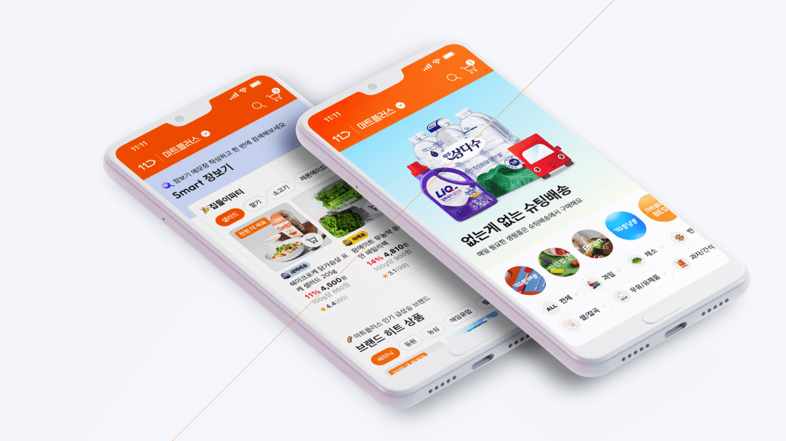
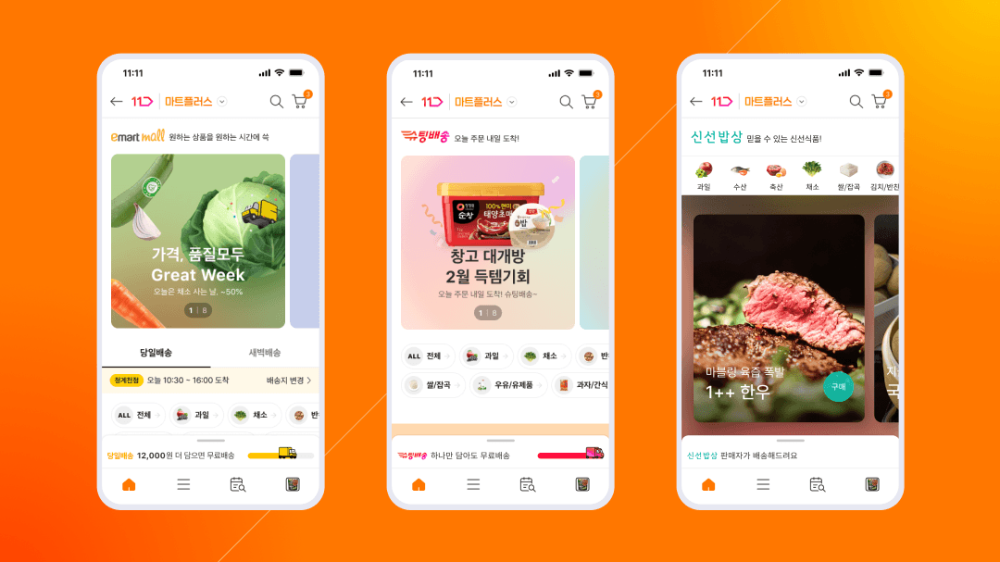
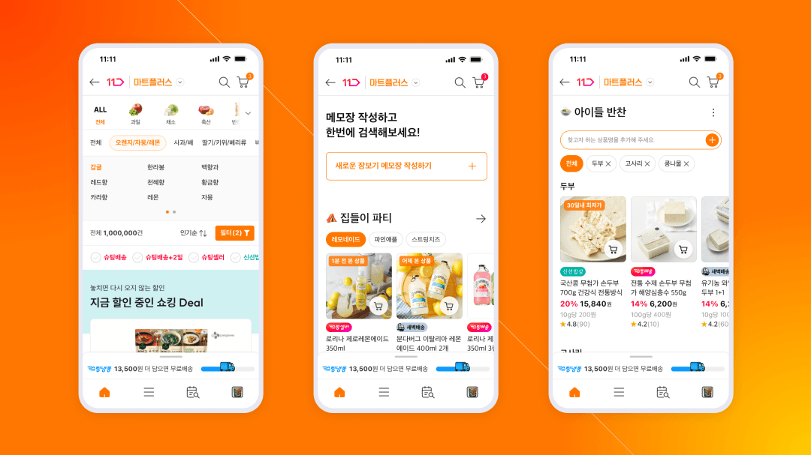
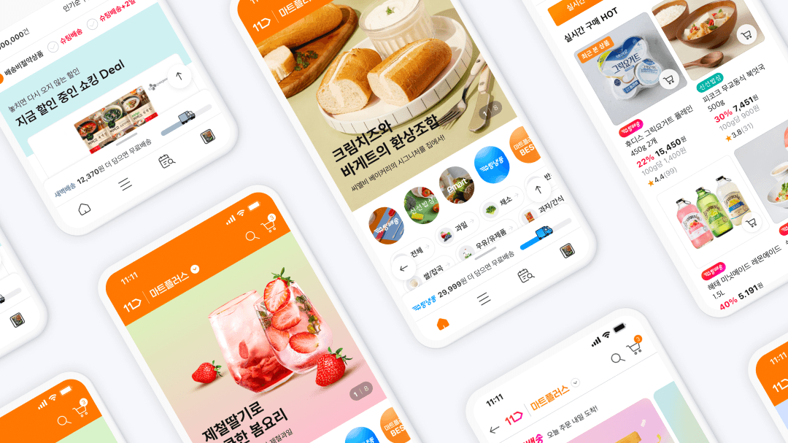

MartPlus
+ Mart Plus는 온라인 장보기의 복잡함을 줄이고, 신선식품 중심 신뢰와 혜택을 강화해 더 빠르고 직관적인 구매 경험을 만든 프로젝트예요
+ 생활 맥락 기반 구성과 담기 중심 UI, 이어지는 할인 흐름으로 들어가면 바로 담고 결제하는 장보기 경험을 구현했어요

Smart Upgrade — 마트플러스는 기존 온라인 장보기의 불편함을 줄이고, 더 빠르고 직관적인 구매 흐름을 만들기 위해 기획됐어요. 복잡한 카테고리 탐색 대신 생활 맥락 중심으로 상품을 재구성했고, 자주 사는 상품은 더 쉽게, 필요한 상품은 더 빠르게 찾을 수 있도록 구조를 개선했어요. 오프라인 마트의 동선을 디지털 안에서 재해석해 ‘들어가면 바로 담을 수 있는’ 경험을 목표로 설계했어요.

Fresh Focus — 마트플러스는 특히 신선식품 경쟁력을 전면에 내세웠어요. 산지·품질·가격 정보를 명확하게 전달해 신뢰를 확보했고, 당일·새벽 배송 등 빠른 물류 강점을 UX 흐름 안에 자연스럽게 녹였어요. 상품 상세에서는 핵심 정보가 먼저 보이도록 정리해 구매 판단 시간을 줄였고, 묶음 혜택과 장바구니 연계 할인도 직관적으로 노출해 체감 혜택을 높였어요.

Deal Flow — 마트플러스는 단순 할인 나열이 아니라, 장보기 흐름 안에서 혜택이 이어지도록 설계했어요. 행사 상품, 카드 할인, 멤버십 혜택을 한 번에 확인할 수 있게 구성해 ‘최종 체감가’를 빠르게 인지하도록 했어요. 반복 구매 상품은 더 쉽게 재구매할 수 있도록 연결했고, 대용량·묶음 구매 시 이점이 자연스럽게 보이도록 구조를 단순화했어요.

Simple Basket — UI는 상품 탐색보다 ‘담기’ 행동에 집중했어요. 버튼은 크게, 정보는 간결하게 정리해 스크롤 중에도 바로 담을 수 있도록 구성했어요. 장바구니에서는 할인 적용 내역과 배송 조건을 한눈에 보여줘 결제 전 고민을 줄였어요. 전체 흐름은 복잡한 비교가 아니라, 빠르고 명확한 장보기 경험으로 이어지도록 설계했어요.